오늘 만들 것과 Pub/Sub 복습
지난 강의에서는 Redis CLI(Command Line Interface)로 구독과 발행을 직접 쳐 봤어요. 실무에서는 사람이 CLI를 두드리지 않아요. FastAPI 같은 백엔드 서버가 Redis와 붙어서 구독하고 발행해요. 이번 실습은 그 연결을 만들어 보는 거예요.
학습 목표 상자에는 세 줄이 있어요. 실제 FastAPI 서버 환경에서 Pub/Sub 구조를 설계하기, 비동기 루프로 구독 커넥션을 효율적으로 관리하기, 그리고 SSE(Server-Sent Events)로 서버 이벤트를 브라우저에 밀어 주기예요.
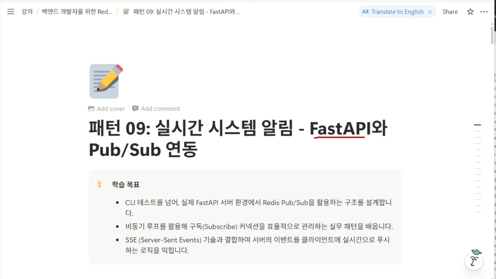
SSE는 HTML(HyperText Markup Language) 5에 들어온 기술이에요. 서버가 HTTP(HyperText Transfer Protocol) 연결을 열어 둔 채 데이터를 브라우저로 계속 밀어 주는 단방향 스트리밍이에요. Pub/Sub와는 관계가 없어요. 브라우저가 FastAPI에 접속하면 FastAPI가 Redis를 구독하고, 받은 메시지를 브라우저까지 보여 주려고 쓴 거예요. 브라우저가 서버에서 새 소식을 받는 방법으로는 폴링, SSE, 웹소켓이 있는데, 발표자는 실제로는 폴링이 90% 이상이라고 말해요.
Pub/Sub 구조 다시 보기
슬라이드의 그림은 왼쪽 Publisher, 가운데 Redis(Pub/Sub Broker)의 Channel 1~3, 오른쪽 Subscriber 세 대로 되어 있어요. 발행자가 채널 하나에 메시지를 PUBLISH하면, 그 채널을 SUBSCRIBE한 구독자 모두에게 '1:N Broadcast'로 퍼져요. 그림 아래에는 'Volatile message delivery', 즉 휘발성 전달이라고 적혀 있어요.
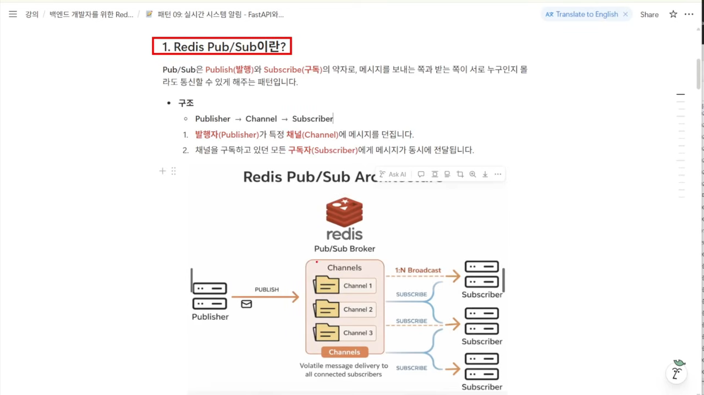
발행자와 구독자는 서로 직접 연결되지 않고 Redis만 거쳐요. 이걸 느슨한 결합, 또는 디커플링이라고 불러요. 구독자가 몇 대로 늘어도 발행자 쪽은 바꿀 게 없어서 확장하기 쉬워요.
구독한 연결은 다른 일을 못 해요
CLI에서 구독을 테스트하는 건 아주 간단했어요. 그런데 Java, Node, FastAPI 같은 백엔드 코드에서 Redis Pub/Sub를 붙일 때는 주의할 점이 하나 있어요. 슬라이드의 '왜 백엔드 코드에서 Pub/Sub이 까다로울까요?' 아래 세 줄이 그 이유예요.
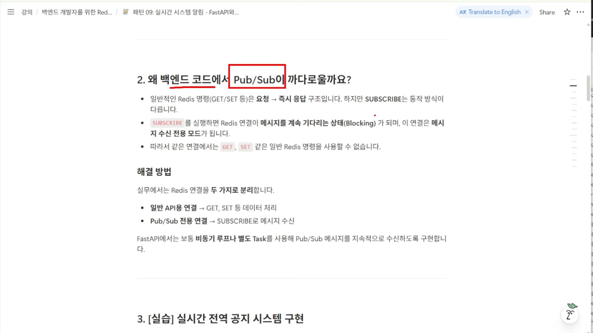
GET, SET 같은 일반 명령은 요청하면 바로 응답이 오고 끝나요. 반면 SUBSCRIBE를 실행하면 그 연결은 메시지가 올 때까지 기다리는 블로킹 상태가 돼요. 이때부터 연결은 메시지 수신 전용 모드라서, 같은 연결로는 GET이나 SET을 보낼 수 없어요.
그래서 실무에서는 Redis 연결을 둘로 나눠요. 아래 그림처럼 일반 명령을 처리하는 연결은 그대로 두고, 구독만 맡는 연결을 따로 둬요. FastAPI에서는 보통 비동기 루프나 별도 Task가 이 전용 연결에서 메시지를 계속 받아요. 이번 예제는 비동기 루프 방식이에요.
실습할 전역 공지 시스템
이번에 만들 건 '실시간 전역 공지 시스템'이에요. 슬라이드 그림은 왼쪽부터 Clients(브라우저), Servers(서버 여러 대), 오른쪽 Redis Pub/Sub 순서예요. 브라우저는 서버에 SSE Request를 보내 Event Stream 통로를 열어 두고, 서버들은 Redis 채널을 SUBSCRIBE해요.
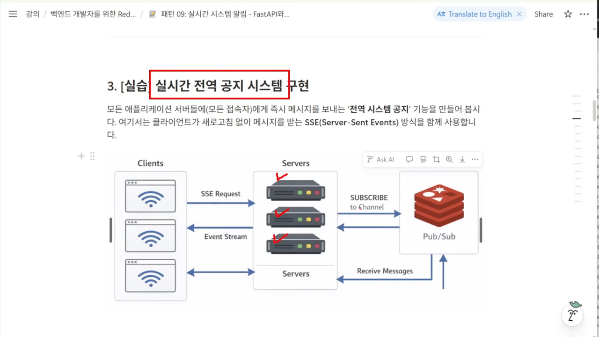
어느 서버가 메시지를 Redis에 발행하면, Redis는 채널을 구독 중인 모든 서버에 즉시 보내요. 서버들은 열려 있던 SSE 연결로 그 메시지를 브라우저에 전달해요. 발행은 구독 중인 서버 중 하나가 해도 되고, 뒤쪽 관리 도구나 Redis CLI에서 관리자가 직접 해도 돼요.
같은 구조를 쓸 수 있는 곳
예제는 공지라는 가상 시나리오지만, 발표자는 서버가 여러 대로 분산된 환경이면 어디든 쓸 수 있다고 해요.
| 쓰임새 | 누가 발행하나요 | 받은 서버는 무엇을 하나요 |
|---|---|---|
| 전역 공지 | 어느 서버, 관리 도구, Redis CLI | SSE로 브라우저에 그대로 전달 |
| 채팅 | 메시지를 받은 서버 | 자기에게 붙은 사용자에게 전달 |
| 분산 락 해제 알림 | 락을 걸었다가 푼 서버 | 기다리던 서버가 바로 다음 작업 |
| 로컬 캐시 무효화 | RDB(Relational Database)의 사용자 정보를 고친 서버 | 자기 로컬 캐시를 갱신하거나 버림 |
마지막 경우는 브라우저가 없어도 돼요. 서버마다 사용자 정보를 로컬 캐시로 똑같이 들고 있을 때, 한 서버가 정보를 바꾸면 Redis로 알리기만 하면 나머지 서버가 알아서 캐시를 정리해요.
서버 코드 ①: 연결 풀, 발행, SSE 엔드포인트
서버 파일 이름은 pub_sub_server.py예요. 맨 위에서 redis.asyncio를 redis로 가져오고, lifespan 함수에서 서버가 시작할 때 redis.from_url("redis://localhost:6379/0", ...)으로 연결 풀을 만들어 app.state.redis에 넣어요. yield 뒤에서는 서버가 끝날 때 aclose()로 안전하게 닫아요. 이 강의 시리즈에서 계속 써 온 패턴이에요.
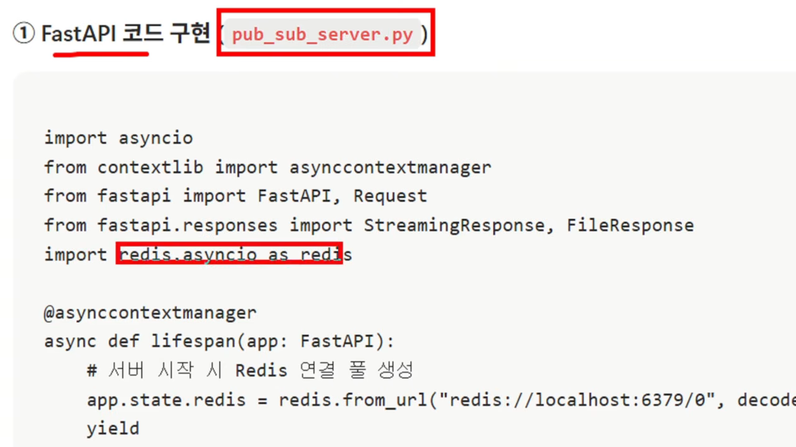
redis.asyncio가 비동기 클라이언트예요. FastAPI의 이벤트 루프를 막지 않고 Redis를 쓸 수 있어요. 영상 07:42에서 보기그다음 공지 채널 이름을 NOTICE_CHANNEL = "system:notices"로 정해 두고, 엔드포인트 세 개를 만들어요.
| 엔드포인트 | 하는 일 | Pub/Sub와의 관계 |
|---|---|---|
GET /pub_sub | 테스트용 pub_sub.html을 FileResponse로 돌려줘요 | 없음. 테스트 페이지용 |
POST /publish-notice | Swagger에서 받은 message를 채널에 발행해요 | 발행자 |
GET /stream-notices | SSE 통로를 열고, 구독해서 받은 메시지를 흘려보내요 | 구독자. 이번 예제의 핵심 |
발행은 세 줄이면 돼요
아래 화면의 send_notice를 보면, request.app.state.redis에서 연결을 하나 가져와요. 여기서는 아직 Pub/Sub 전용이 아니라 일반 명령용 연결이에요. 이걸로 publish(NOTICE_CHANNEL, message)를 부르고, success와 함께 메시지를 받은 구독자 수 received_subscribers를 돌려줘요.
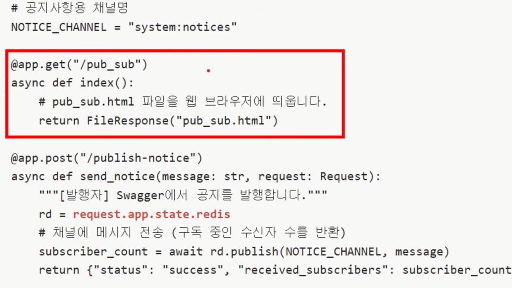
/pub_sub는 HTML만 돌려주는 엔드포인트예요. 실제 발행은 아래 publish-notice의 rd.publish 한 줄이에요. 영상 08:22에서 보기구독 쪽: SSE 엔드포인트와 전용 연결
/stream-notices 안에는 event_generator()라는 비동기 제너레이터가 정의돼 있어요. SSE는 연결을 열어 둔 채 데이터가 생길 때마다 보내야 해서, 데이터를 계속 만들어 내는 함수가 필요해요. 이 함수 자체는 SSE를 위한 코드예요.
그 안의 async with request.app.state.redis.pubsub() as pubsub: 한 줄이 앞 섹션에서 말한 연결 분리예요. lifespan에서 만든 같은 풀에서 Pub/Sub 전용 연결을 하나 꺼내요. async with라서 작업이 끝나면 연결이 자동으로 풀에 돌아가요. 그다음 pubsub.subscribe(NOTICE_CHANNEL)로 구독해요.
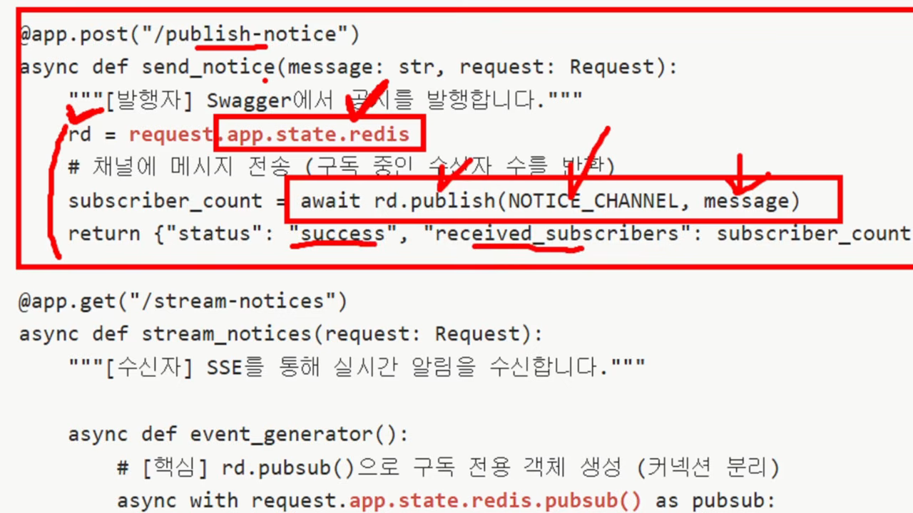
app.state.redis는 일반 연결, 아래 app.state.redis.pubsub()는 구독 전용 연결이에요. 같은 풀에서 나오지만 쓰임이 달라요. 영상 09:36에서 보기서버 코드 ②: 메시지를 기다리는 루프
구독을 걸었으면 이제 메시지를 기다려야 해요. 화면의 while True 루프 안에서 pubsub.get_message(ignore_subscribe_messages=True, timeout=1.0)를 기다리고, 그 아래 if message and message['type'] == 'message':를 통과한 것만 data로 꺼내요.
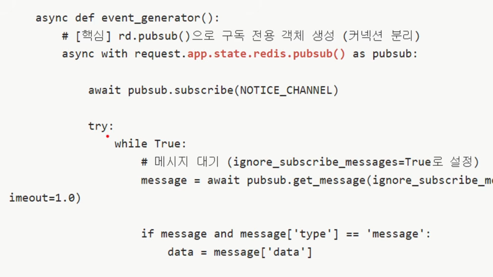
type 검사로 한 번 더. 영상 11:38에서 보기두 인자의 뜻은 이래요.
ignore_subscribe_messages=True— Redis는 실제 데이터 말고도 subscribe, unsubscribe 확인 같은 메타 메시지를 보내요. 이 옵션이 그걸 무시해요.timeout=1.0— 타임아웃이 없으면get_message는 메시지가 올 때까지 계속 블로킹돼요. 1초를 주면 1초만 기다리고, 아무것도 없으면 None을 돌려주며 빠져나와요.
타임아웃 없이 계속 막혀 있어도 구현은 돼요. 그래도 실무에서는 잠깐 기다렸다 빠져나와 다른 상태를 확인하고, 다시 루프로 올라가 기다리는 형태를 많이 써요. 이 예제에서 확인하는 상태는 '브라우저가 떠났는가'예요. 창을 닫은 사용자를 위해 계속 기다릴 필요는 없으니까요.
flowchart TD A["get_message(timeout=1.0)
최대 1초 대기"] --> B{"type이 message?"} B -- "예" --> C["yield로 SSE 한 건 전송"] B -- "아니오 (None)" --> D C --> D{"request.is_disconnected()?"} D -- "예" --> E["break → finally에서 unsubscribe"] D -- "아니오" --> F["asyncio.sleep(0.01)"] F --> A
SSE로 내보내고, 잠깐 쉬고, 정리하기
아래 화면의 순서대로 읽으면 돼요. 메시지가 있으면 yield f"data: {data}\n\n"로 SSE 표준 형식에 맞춰 내보내요. 다음 줄의 await request.is_disconnected()가 참이면 break로 루프를 끝내요. 맨 아래 StreamingResponse(event_generator(), media_type="text/event-stream")가 이 제너레이터를 응답으로 돌려줘요. yield와 StreamingResponse는 Pub/Sub와 관계없는 SSE 쪽 코드예요.
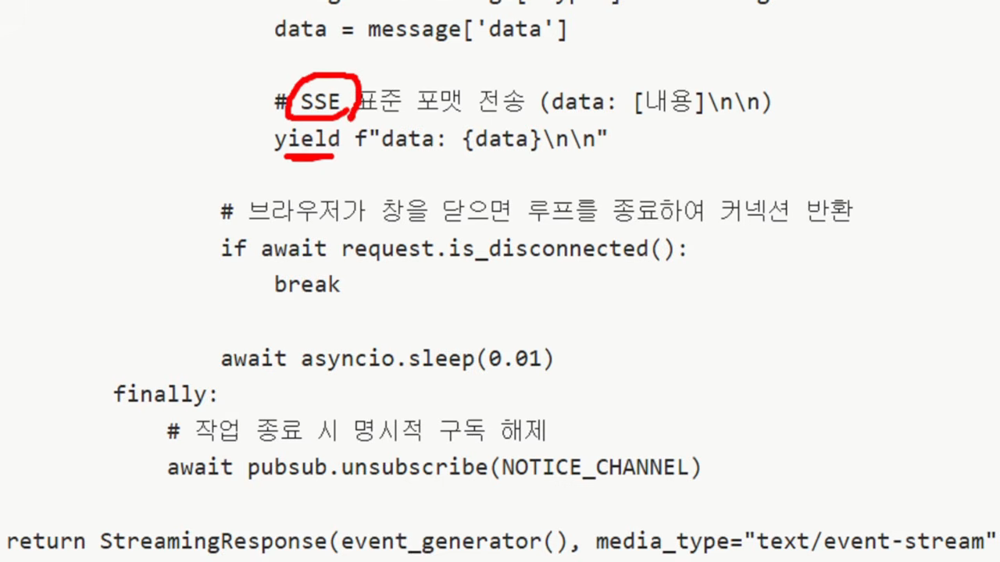
data: …\n\n이 SSE 한 건의 형식이에요. 빈 줄 하나가 메시지 하나의 끝이에요. 영상 14:18에서 보기await asyncio.sleep(0.01)은 루프를 아주 잠깐 멈춰요. 쉬지 않고 돌면 CPU(Central Processing Unit)를 많이 쓰고 이벤트 루프를 혼자 차지할 수 있어서, 다른 비동기 작업에도 실행 기회를 주려는 거예요. 루프가 끝나면 finally에서 pubsub.unsubscribe(NOTICE_CHANNEL)로 구독을 명시적으로 해제해요.
클라이언트마다 구독하면 안 되는 이유
코드 설명이 끝나자 발표자는 '(주의) Pub/Sub 연결 객체' 상자를 짚어요. 지금 예제는 클라이언트 수만큼, 즉 접속한 브라우저 수만큼 Pub/Sub 연결이 생겨요.
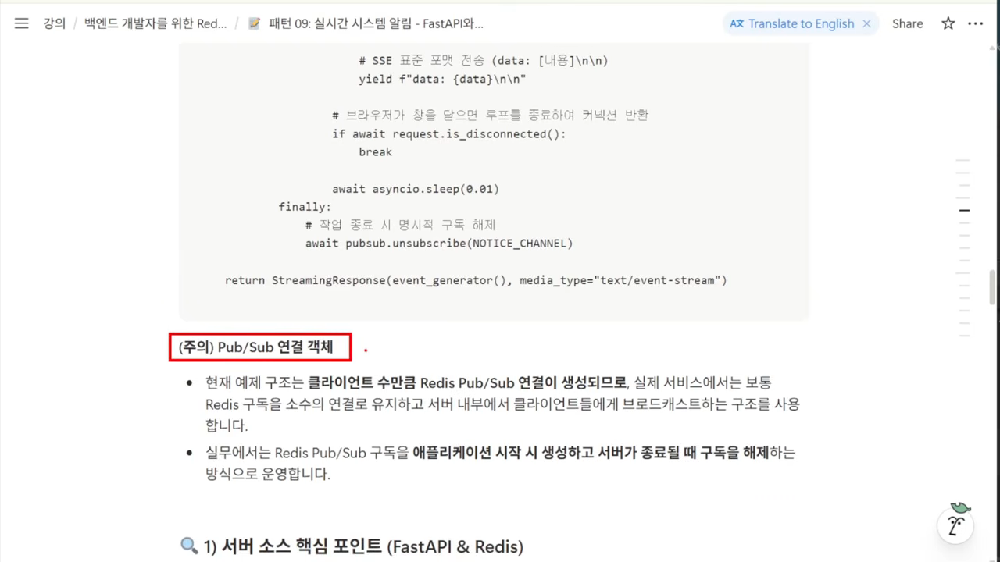
브라우저가 하나 들어오면 전용 연결을 만들고 구독하고 get_message로 기다려요. 또 하나 들어오면 또 만들어요. 결과를 한 번에 눈으로 보기 쉬우라고 이렇게 짠 것이고, 사용자가 많아지면 구독 연결도 끝없이 늘어나요. 그래서 실제로는 잘 쓰지 않아요.
실무에서는 서버 입장에서 애플리케이션이 시작할 때, 또는 특정 조건이나 이벤트가 생겼을 때 소수의 전용 연결로 구독해요. 메시지가 오면 자기에게 붙은 여러 클라이언트에게 나눠 주는 일은 서버 내부 로직이 맡아요. 구체적인 구조는 마지막 섹션에서 다시 나와요.
커넥션 독점 문제, 한 번 더
'서버 소스 핵심 포인트'의 첫 항목이 커넥션 독점(Connection Monopoly) 문제예요. 문제와 해결이 나란히 정리돼 있어요.
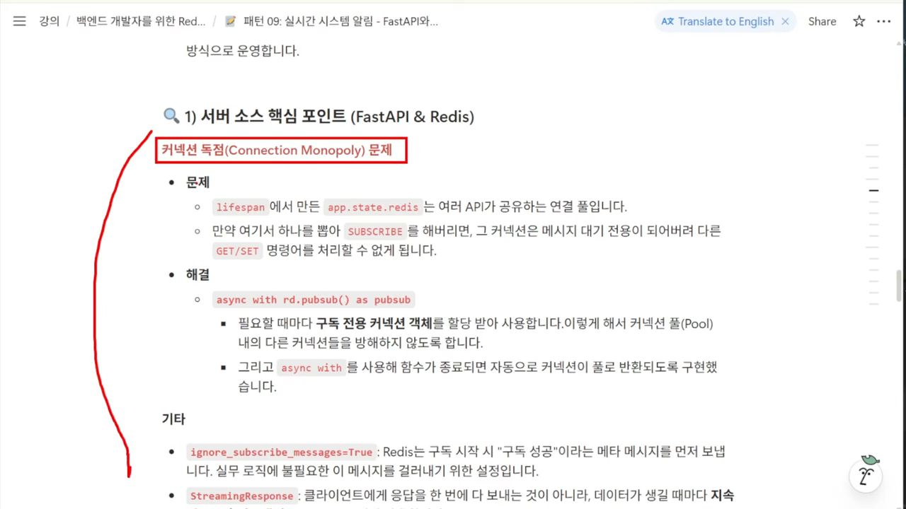
async with rd.pubsub() as pubsub 한 줄이 섹션 4에서 본 바로 그 코드예요. 영상 17:45에서 보기lifespan에서 만든 app.state.redis는 FastAPI의 여러 API가 함께 쓰는 커넥션 풀이에요. 여기서 연결 하나를 뽑아 그대로 SUBSCRIBE를 걸면, 그 연결은 메시지 대기 전용이 돼서 GET/SET을 처리하지 못해요. 그래서 rd.pubsub()로 구독 전용 연결을 필요할 때 받아 쓰고, async with로 끝나면 풀에 돌려줘요. 풀의 다른 연결을 방해하지 않게 하는 거예요.
정리 화면의 '기타'에는 앞에서 본 ignore_subscribe_messages=True, StreamingResponse, request.is_disconnected()도 한 줄씩 정리돼 있어요. 마지막으로 발표자는 '실무적 이점: 서비스 간 디커플링'을 다시 짚어요. 두 애플리케이션이 직접 연결되지 않으니 서로의 존재를 몰라도 돼요. 발행자는 발행만 하고, 메시지가 필요한 서버만 구독해서 자기 일을 하면 돼요.
서버 두 대로 직접 확인하기
프론트 코드는 받아서 찍기만 해요
pub_sub.html의 스크립트는 짧아요. 맨 위에서 지금 접속한 포트를 화면에 표시하고, '// SSE 연결 시작' 주석 아래 new EventSource("/stream-notices")로 SSE 연결을 열어요. onmessage가 불릴 때마다 event.data와 현재 시각을 한 줄로 만들어 로그 영역에 붙이고, 스크롤을 맨 아래로 내려요.
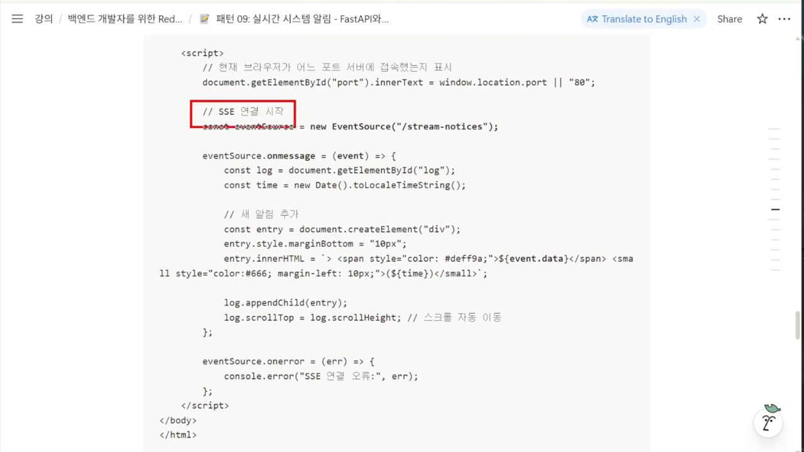
테스트 계획
실습 가이드는 '다중 서버 Pub/Sub 테스트 (1:N 통신)'이에요. 1단계 상자에 uvicorn 명령 두 줄이 있어요. 같은 pub_sub_server:app을 --port 8000과 --port 8001로 띄워서 서로 다른 웹 애플리케이션 두 대처럼 써요. 2단계는 브라우저로 각 서버의 /pub_sub에 접속해 수신자를 만드는 거예요.
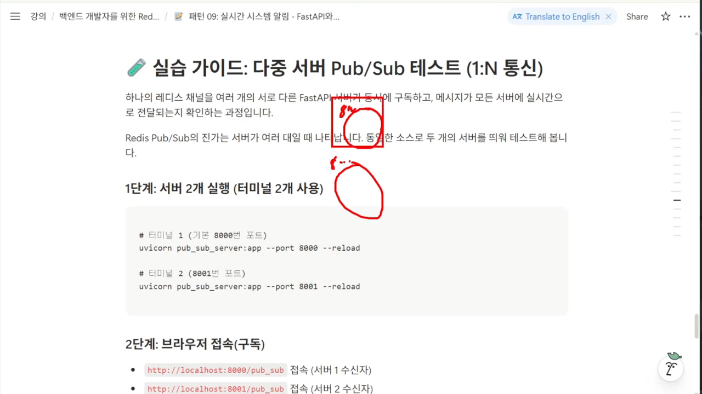
| 역할 | 8000번 서버 | 8001번 서버 |
|---|---|---|
| 서버 실행 | uvicorn pub_sub_server:app --port 8000 --reload | uvicorn pub_sub_server:app --port 8001 --reload |
| 수신 페이지 | localhost:8000/pub_sub | localhost:8001/pub_sub |
| 발행 (Swagger UI(User Interface)) | localhost:8000/docs | localhost:8001/docs |
3단계는 Swagger UI에서 메시지를 서로 발행해 보는 거예요. '확인 결과' 상자에는 기대하는 결과가 적혀 있어요. 8000번 앱과 8001번 앱에 알림이 동시에 떠야 해요. Redis가 메시지를 보관하지 않고 즉시 모든 구독자에게 밀어 주기 때문이에요. 서버가 100대, 1,000대로 늘어도 같은 채널을 구독하면 모든 사용자에게 실시간으로 보낼 수 있어요.
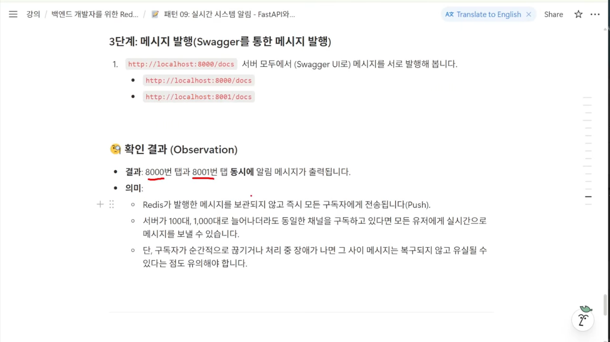
Pub/Sub는 휘발성 메시지를 보내요. 한 번 발행된 메시지는 그때 받지 못하면 나중에도 받을 수 없어요. Redis 어디에도 저장되지 않아요.
직접 띄워 보기
Python 가상 환경이 있는 C:\fastapi-study에서 터미널 두 개를 열고 가상 환경을 켜요. 그다음 위 명령으로 서버를 띄워요. 화면의 위 터미널은 8000번, 아래는 8001번이에요. 둘 다 'Application startup complete' 뒤에 GET /stream-notices 200 OK가 찍혀 있어요. 브라우저가 SSE 연결을 연 흔적이에요.
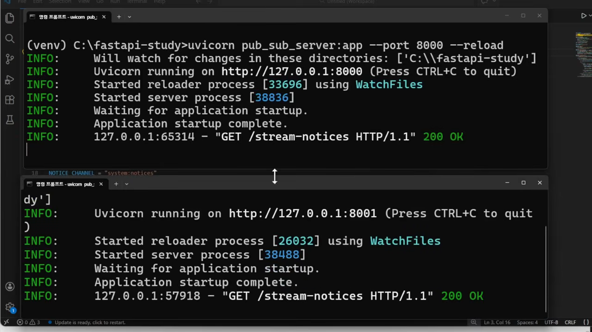
pub_sub_server로 꼭 맞춰 달라고 말해요. 영상 23:23에서 보기크롬 창 두 개를 위아래로 놓고, 각 창 왼쪽에는 /docs, 오른쪽에는 /pub_sub를 열어요. 처음에는 주소를 잘못 넣어 페이지가 안 떴다가 고쳐요. 수신 페이지에는 '실시간 시스템 공지'와 현재 접속 포트(8000, 8001), 그리고 '알림을 기다리는 중…'이 보여요.
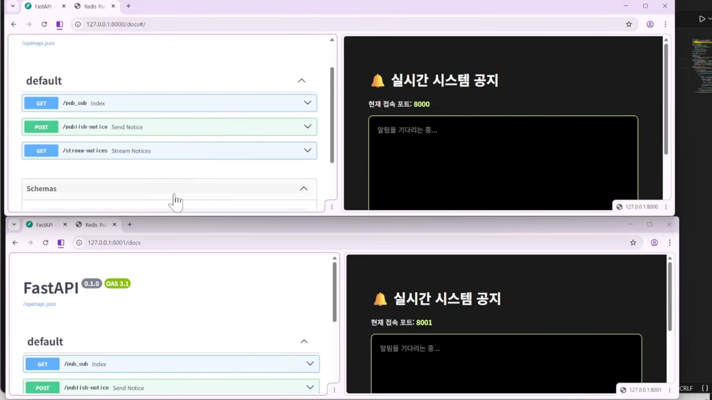
위 창(8000번)의 POST /publish-notice에 hello 8000을 넣고 Execute를 누르면, 위아래 수신 페이지에 같은 줄이 바로 찍혀요. 8000번이 자기에게도 보냈고, 8001번도 8000번이 발행한 걸 즉시 받았어요.
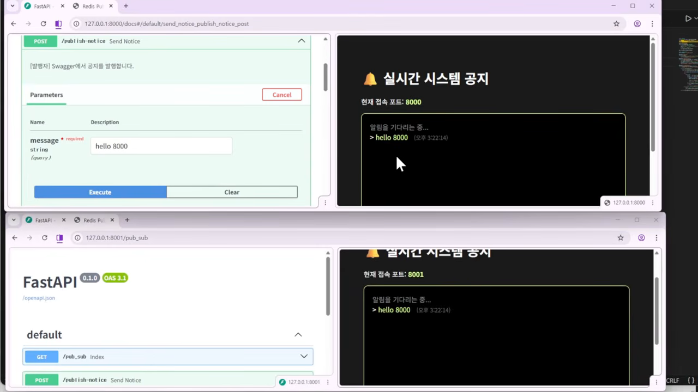
이번에는 8001번에서 발행하고, 위에서 111111, 아래에서 22222를 번갈아 여러 번 보내요. 양쪽 로그가 같은 순서로 쌓여요. 어디서 발행하든 양쪽 모두 실시간으로 받아요.
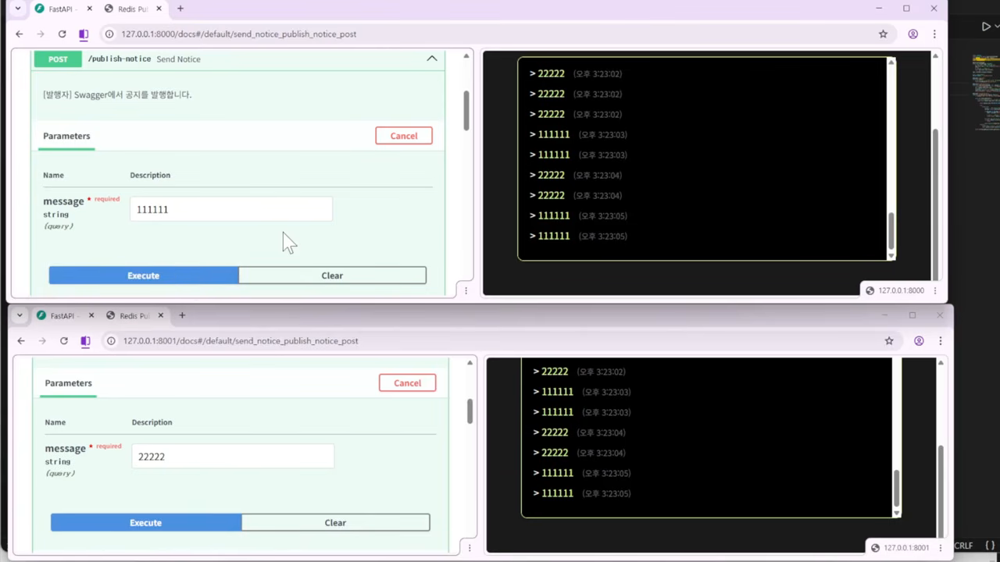
실무 구조와 강의 요약
발표자는 끝내기 전에 다시 강조해요. 이번 실습처럼 클라이언트 수만큼 Pub/Sub 연결을 만들고 구독하는 건 실제로는 안티패턴이에요. 그리고 화면에 서버 A, 서버 B, Redis를 그려 가며 정석 구조를 설명해요. 아래 그림은 그 설명을 옮긴 거예요.
정석은 이래요. 서버 A와 B에 사용자가 많이 붙어 있다면, 각 서버는 시작할 때 Pub/Sub 연결을 한 번만 만들어 구독해 둬요. SSE로 들어오는 클라이언트는 큐 같은 별도 자료구조에 담아 둬요. 구독 채널로 메시지가 오면, 서버가 자기 메모리에 있는 클라이언트들에게 전부 보내요. 이번 예제 코드는 FastAPI에서 Redis 구독이 어떻게 돌아가는지 이해하는 용도로만 쓰면 돼요.
강의 요약
마지막 '요약 및 생각해볼 점' 화면에는 다섯 줄이 있어요. 브로드캐스팅, 커넥션 분리, SSE 활용, 휘발성, 그리고 Pub/Sub를 쓰면 안 되는 곳이에요.
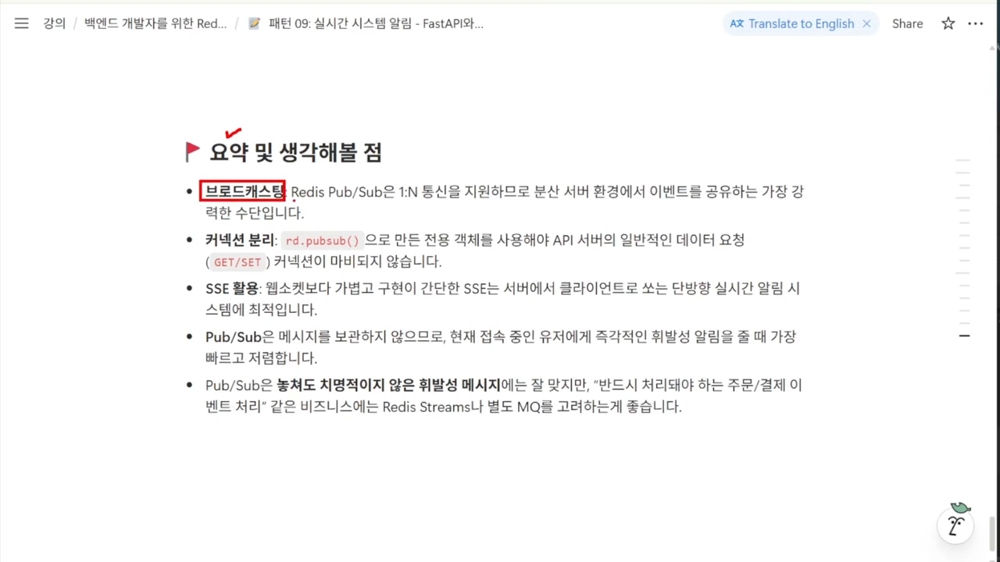
- 브로드캐스팅 — Pub/Sub는 1:N 통신이라, 분산 서버끼리 이벤트를 나누는 가장 단순한 수단이에요.
- 커넥션 분리 —
rd.pubsub()로 만든 전용 연결을 써야 일반GET/SET연결이 막히지 않아요. - 휘발성 — 메시지를 보관하지 않아서, 지금 접속 중인 사용자에게 즉각 알림을 줄 때 가장 빠르고 싸요.
- 안 쓸 곳 — 주문이나 결제처럼 나중에라도 반드시 처리돼야 하는 일에는 Pub/Sub 대신 Redis Streams나 Kafka 같은 MQ를 써요.